Sau đây chúng tôi sẽ hướng dẫn chi tiết hai cách nhập liệu đối với danh sách hàng tờ khai
Cách 1: Nhập thông tin hàng hóa từ danh sách.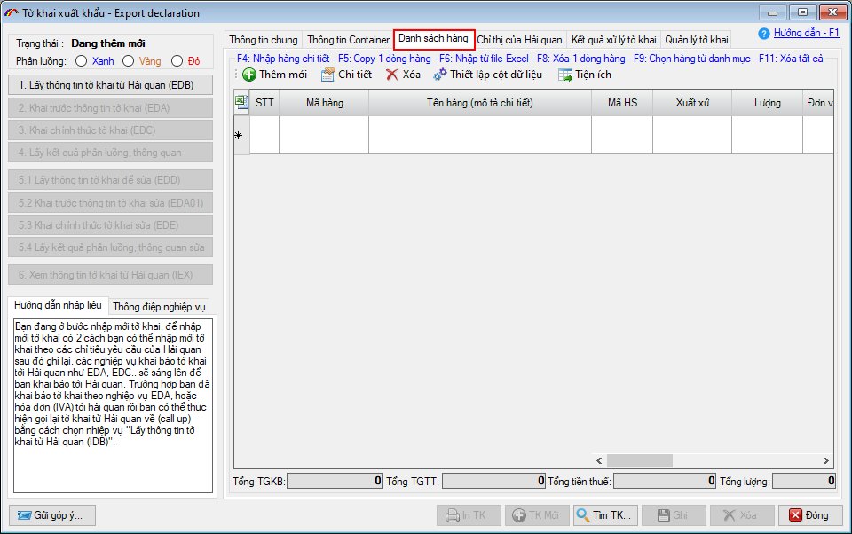
Đối với dòng hàng tờ khai VNACCS có một số lưu ý quan trọng như sau:
Chỉ tiêu Trị giá tính thuế và Thuế suất nhập khẩu: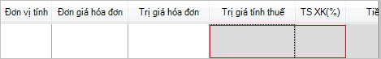
- Đối với tờ khai có áp dụng thuế tuyệt đối để khai báo bạn thiết lập bằng cách nhấn vào "Thiết lập cột dữ liệu" trên mục "Danh sách hàng" và chọn như hình sau:
- Đối với tờ khai có các khoản miễn giảm để khai báo bạn thiết lập khai báo bằng cách chọn "Thiết lập cột hiển thị" trên tab danh sách hàng và chọn như hình sau:
- Đối với tờ khai người khai tự nhập trị giá tính thuế và thuế suất người khai thiết lập bằng cách nhấn vào "Thiết lập cột hiển thị" trên mục "Danh sách hàng" và chọn như sau:
- Đối với tờ khai có thêm các văn bản pháp quy , người khai thiết lập khai báo bằng cách nhấn vào "Thiết lập cột hiển thị" trên mục "Danh sách hàng" và chọn như sau:
- Thông thường sẽ không có cột Trị giá tính thuế , Thuế suất và tiền thuế nhập khẩu (giống như giải thích trong phần nhập dòng hàng ở phần trên)
- Sau khi đã chuẩn bị file dữ liệu dòng hàng trên file excel, bạn nhấn phím F6 để tải dữ liệu từ file excel vào danh sách hàng trên tờ khai. Màn hình tải dữ liệu từ excel hiện ra như sau:
- Chọn sanh sách hàng từ danh mục có sẵn: Bạn nhấn F9 để chọn danh sách hàng từ danh mục hàng nhập khẩu hoặc danh mục nguyên phụ liệu, thiết bị, sản phẩm, hàng mẫu đã khai trước đó đối với loại hình Gia công, Sản xuất xuất khẩu, Chế xuất.
- Chức năng copy dòng hàng: Bạn chọn dòng hàng muốn copy sau đó nhấn F5 để tạo ra một dòng hàng tương tự.


Khi đó khoản khai miễn/ giảm cho thuế xuất khẩu sẽ hiện ra trên danh sách hàng:
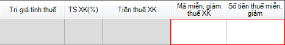
Khi khai báo mã miễn giảm, người khai cần lưu ý như sau:

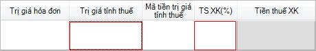
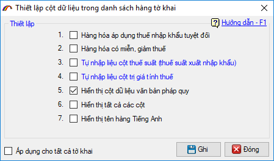
Khi đó trên danh sách hàng các chỉ tiêu về văn bản pháp quy hiện ra cho bạn nhập vào như sau:
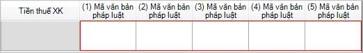
Nhập danh sách hàng từ file Excel: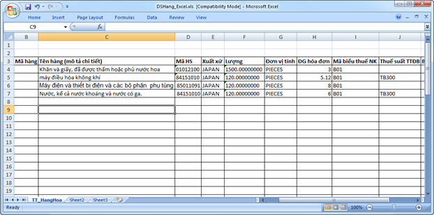

Để tải dữ liệu từ file excel bạn thực hiện các bước thiết lập sau:
Bước 1: Chọn file excel
Bạn chọn tới file excel đang có dữ liệu về hàng hóa nhập sẵn bằng cách nhấn vào "Chọn file EXCEL...".
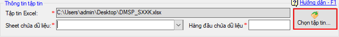
Bước 2: Chọn tên sheets trong file excel mà có chứa thông tin hàng hóa đang cần nhập tại ô "Chọn tên sheet" mục thông số.
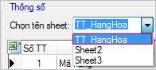
Bước 3: Thiết lập dòng đầu tiên trên file excel có dữ liệu dòng hàng, như hình sau:
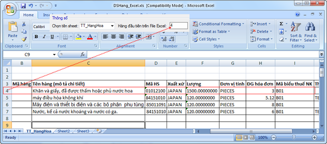
Trường hợp fonts chữ bạn nhập trên file excel là TCVN3, để tránh bị lỗi fonts khi import vào phần mềm bạn đánh dấu chọn vào mục
Bước 4: Thiết lập các cột dữ liệu tương ứng với cột dữ liệu trên danh sách hàng như hình sau:
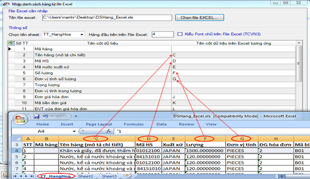
Sau khi thiết lập xong bạn chọn nút "Ghi" để chương trình tải dữ liệu từ file excel vào danh sách hàng của tờ khai.

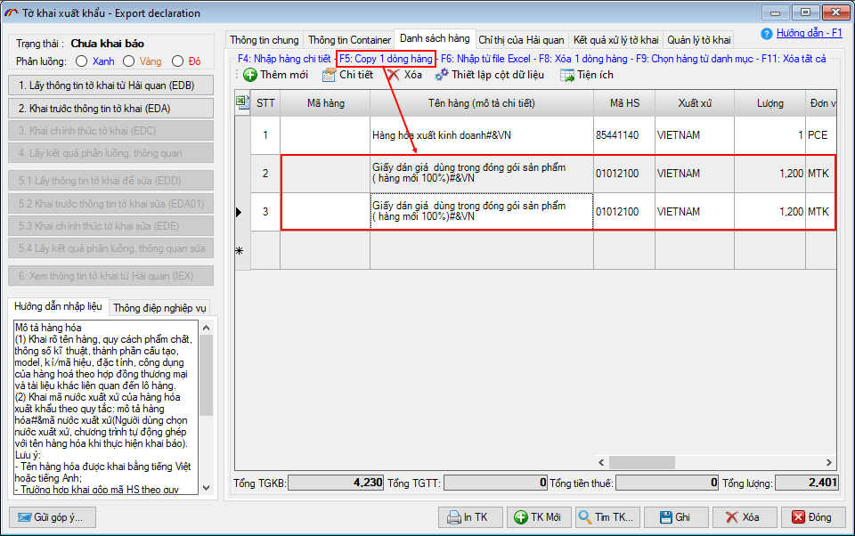